Two distinct geometries
Monza trains the pedal model; Silverstone is excluded from training. The planner can query both maps.
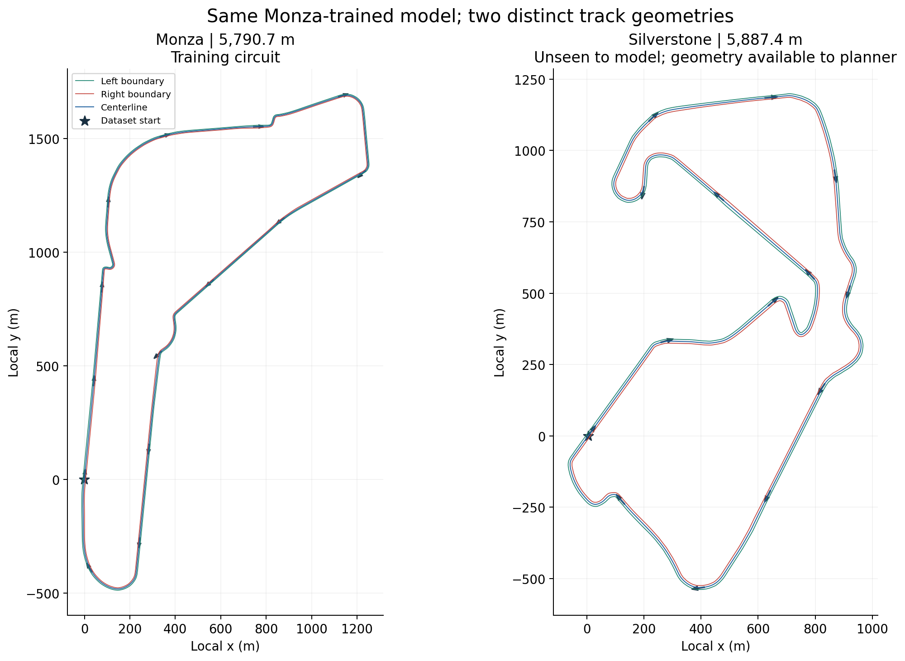
Download original
Measured AI contribution
Matched ablations give a 3.3 s gain on Monza and 1.8 s on Silverstone; both drivers complete clean laps. Single-condition simulator results.
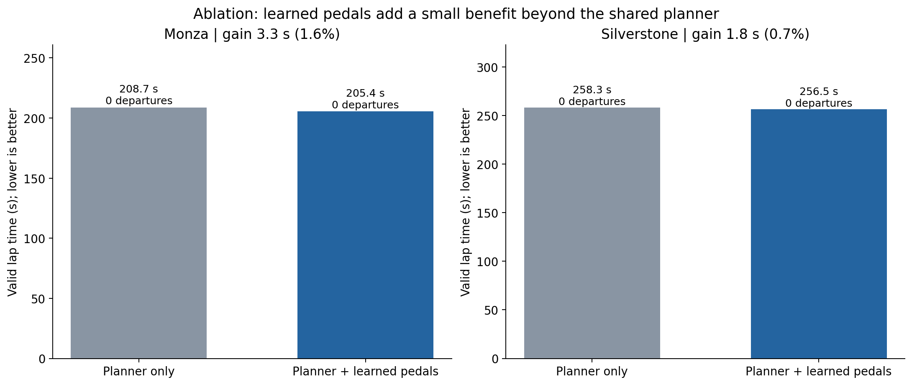
Download original
Farther is not automatically better
Historical raw-pedal models never produced a valid lap. The 1,000 m zero-departure run timed out, rather than completing safely.
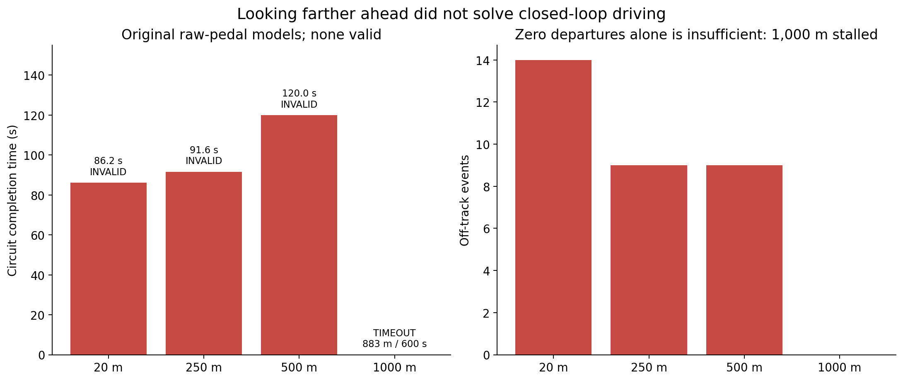
Download original
Qualifying-to-simulator distribution shift
The saved data begins at 73 km/h, whereas simulation starts at rest. Brake labels are imbalanced; accuracy requires a baseline.
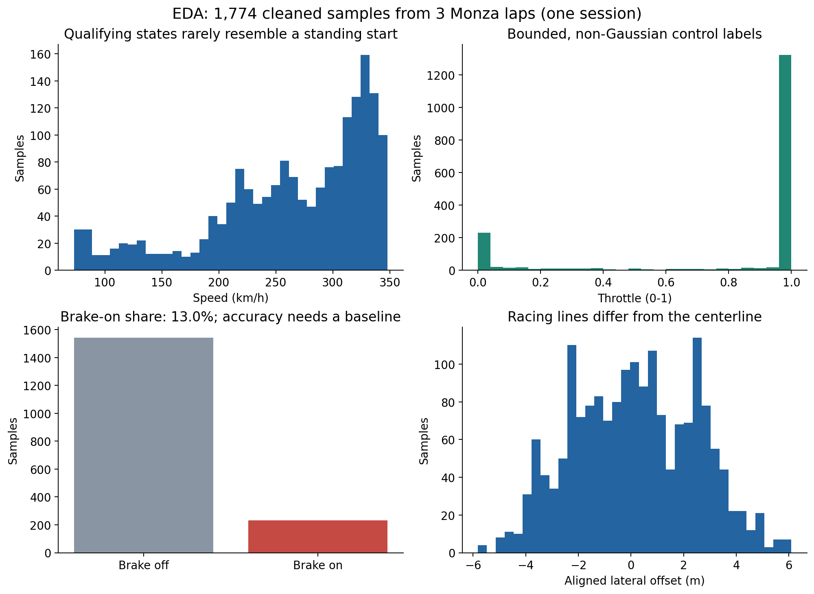
Download original
Feature relationships
Pearson correlations use training laps 5/11 only. Correlation is descriptive and is not evidence of causal driving rules.
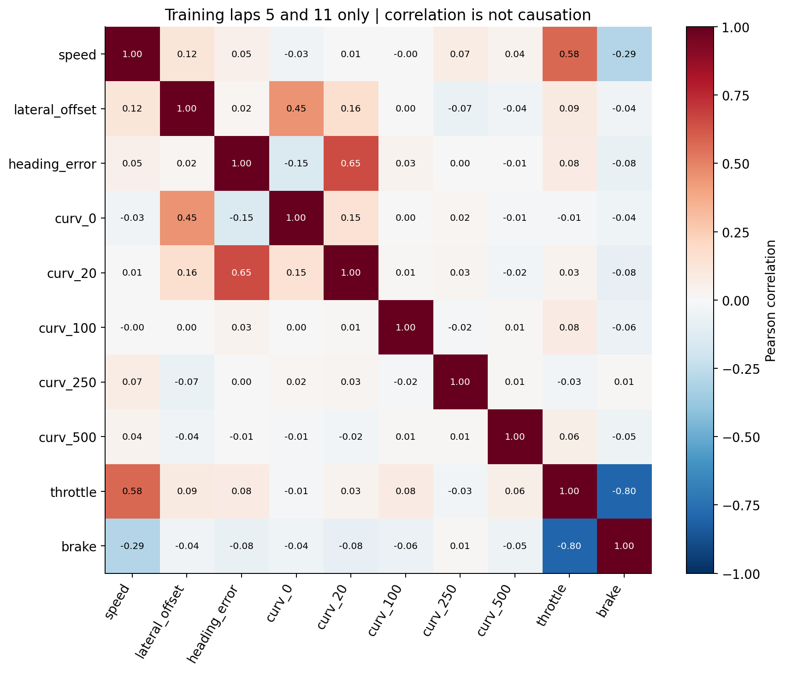
Download original
What the Random Forest uses
Curvature 40 m ahead has the largest impurity importance in the saved 500 m model; correlated features can share importance.
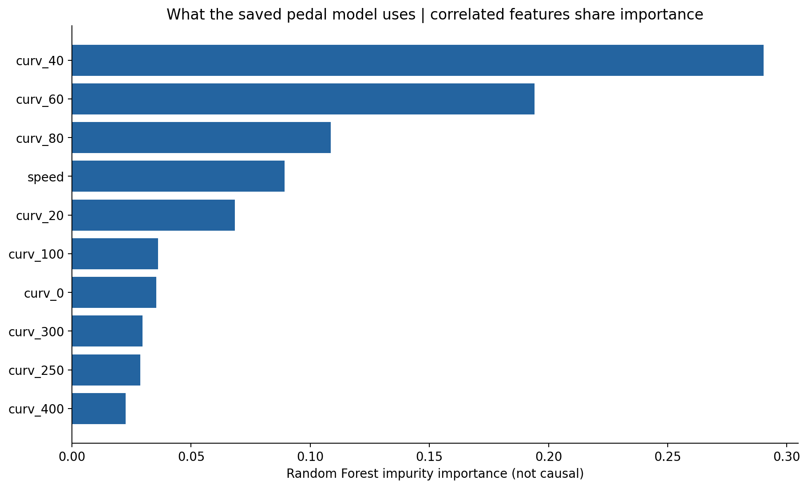
Download original
Offline error versus closed-loop behavior
Predictions on repeatedly inspected lap 14 illustrate errors. These are exploratory validation plots, not a pristine final-test estimate.
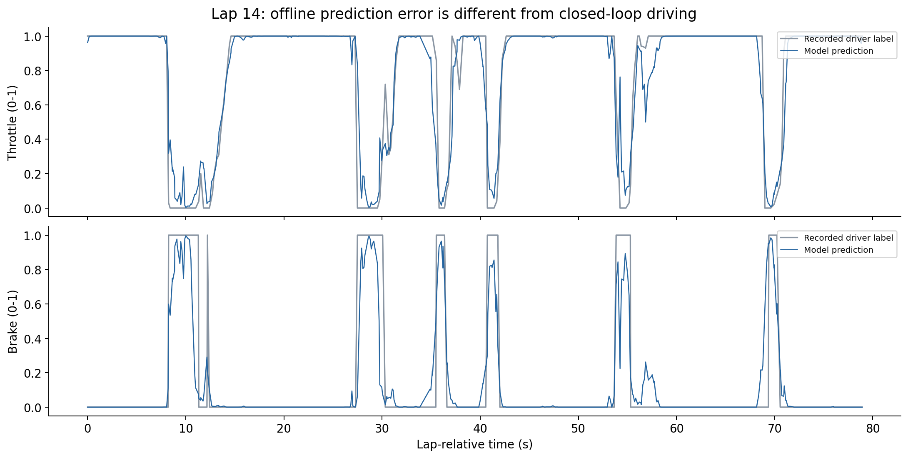
Download original
Several model families
Whole-lap two-fold CV with scaling inside folds. Bars show mean MAE and sample SD; RF and SVR are close with limited data.
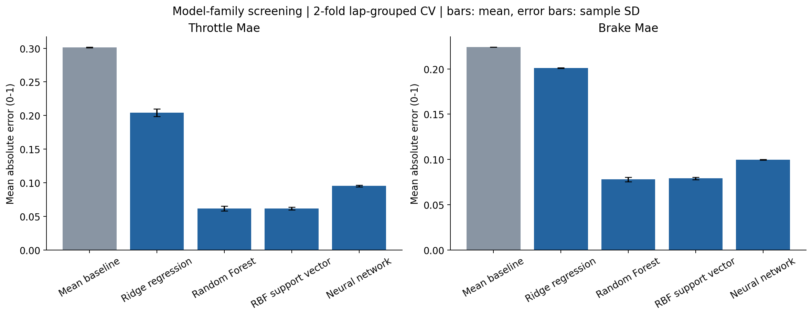
Download original
Where corner speed comes from
The red target is calculated by the hand-written planner. Actual speed follows that envelope; this is not independently learned cornering.
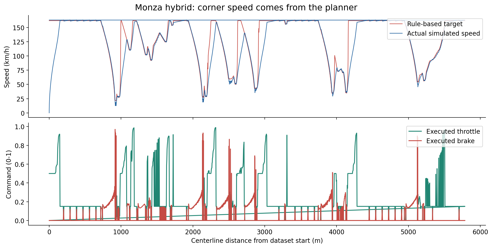
Download original
Same planner on a new circuit
Silverstone speed targets come from its geometry with unchanged parameters. The Monza-trained model contributes only pedal proposals.
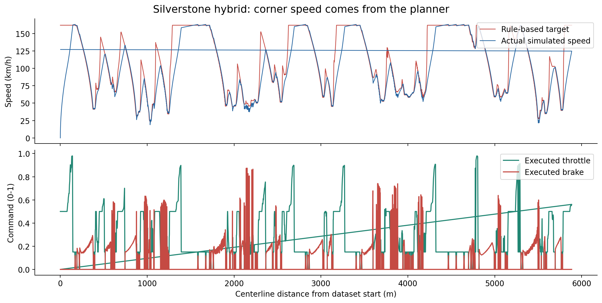
Download original
A fast lap can be invalid
Actual reconstructed trajectories near the first departure: corrected learned pedals alone run outside the boundaries; the hybrid remains inside.
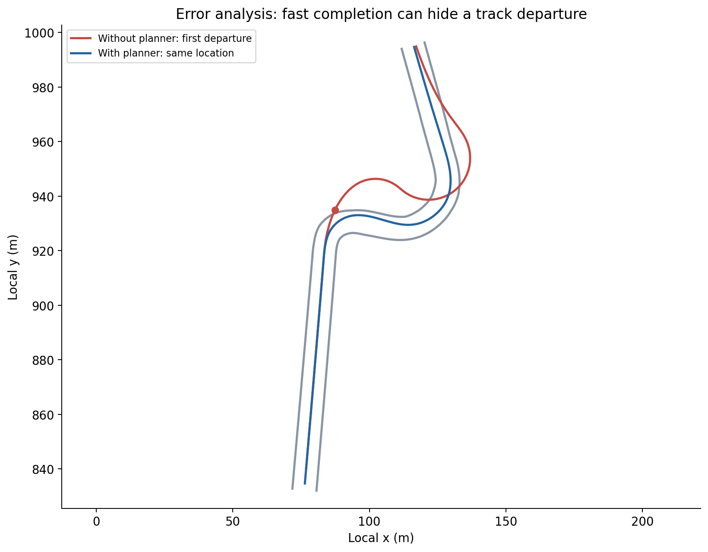
Download original